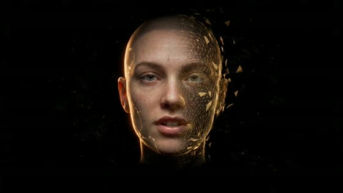
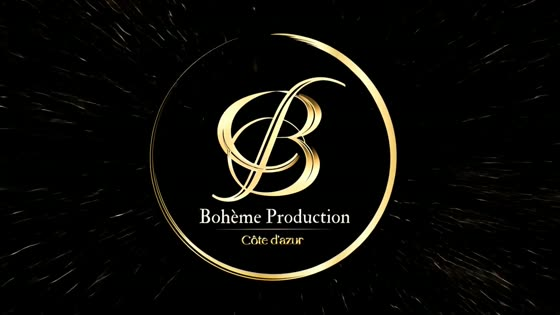

Bohème Production le karaoké du medley — Cannes, 4 octobre 2026


Cette application, créée pour nous six, contient :
🎬 le film d'introduction — tu le verras une fois à l'ouverture,
puis seulement si tu veux le revoir
🎤 le karaoké complet — la bande, les paroles en couleurs,
chacun la sienne
✦ ton guide personnel — « prépare-toi », « à toi »,
tes chœurs dans ta couleur
🎨 les styles, la visite guidée, tout en plein écran
Sur ce téléphone, l'installation passe par le menu du navigateur : Android : menu ⋮ → « Ajouter à l'écran d'accueil » iPhone : bouton Partager → « Sur l'écran d'accueil »
Une fois installée, ouvre toujours
l'application Bohème depuis ton écran d'accueil.
(Sur ordinateur, ce même lien s'utilise directement dans le navigateur.)
📱
Tourne ton téléphone
Le film se regarde en mode paysage
Clique maintenant sur le logo pour entrer dans le karaoké
Clique maintenant sur le logo pour continuer
le son fait partie du film installez-vous confortablement